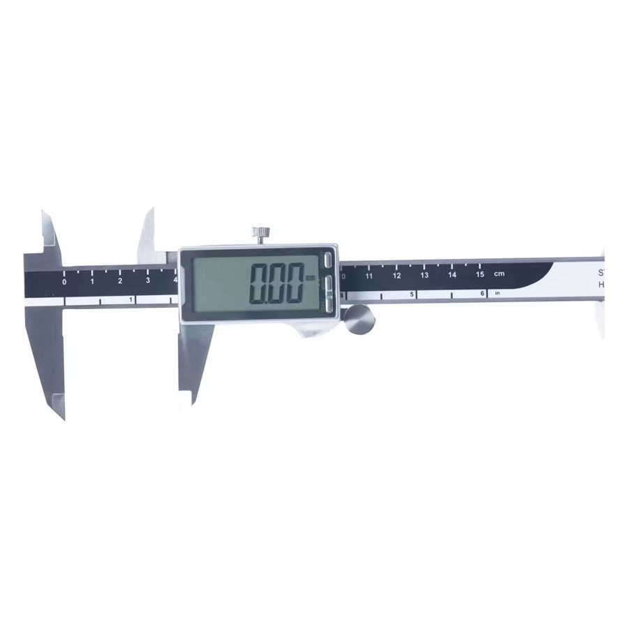

Home / Surveying & testing / Handheld infrared thermometer with laser pointer

Illustration similar – shows the product type.
Surveying & testing
Handheld infrared thermometer with laser pointer
Contactless handheld thermometer for surface temperatures.
The device reads infrared radiation from a surface and shows the temperature instantly. Laser pointer, min/max memory and adjustable emissivity are standard on professional units. Used in heating, HVAC, electrical and construction.
Technical data
| Display | LCD |
|---|---|
| Extra | Data logger |
| Power | Battery |
| Customs tariff number (HS) | 90251980 |
EU standards and regulations
2014/30/EUEMC Directive2011/65/EURoHS(EU) 2023/988GPSR, EU responsible personIEC 60825-1Laser class (pointer)(EU) 2023/1542Batteries Regulation / BattG
More products in this category

Automatic optical level 32x (builder's level)Optical 32x level with air-damped compensator for transferring heights, checking formation level and controlling excavation depth.
Self-levelling rotary laser level (dual-axis, red beam)Self-levelling rotary laser with two tiltable axes, scan angles and remote control for height and slope setting on the building site.
3D cross-line laser level 3×360° (12 lines, green)Self-levelling cross-line laser with three 360° planes for plumb and level lines in drywall, tiling and installation work.
Laser distance meter 50–100 m (Bluetooth)Handy laser distance meter with tilt sensor and Bluetooth for fast measurement of lengths, areas and volumes.
Reflectorless total station / tachymeter (500–600 m)Reflectorless total station for setting-out, as-built survey and quantity measurement with angle and distance measurement in one instrument.
GNSS RTK receiver with tilt sensor (rover, multi-constellation)Compact RTK rover with integrated IMU for setting-out, topographic survey and control measurements without a total station set-up.
Light weight deflectometer (dynamic plate load test, Evd)Portable falling weight device for fast determination of the dynamic deformation modulus Evd of formation and base layers.
Laser receiver / detector for rotary lasers (red and green, with clamp)Handheld receiver that picks up a rotary laser beam in daylight and at long range and shows the height position digitally.
Green laser viewing glasses (beam enhancement for cross-line and rotary lasers)Green-tinted viewing glasses that raise the contrast of green laser lines in bright ambient light; a viewing aid, not laser protection.
Aluminium telescopic levelling staff 5 m (E-graduation, with bubble and bag)Aluminium telescopic staff with E-graduation and bubble vial, 5 m extended, carried in a soft bag.
Aluminium building tripod 5/8 inch for levels and rotary lasers (about 1.6 to 1.8 m, quick-clamp legs)Rigid aluminium tripod with flat head for levels and rotary lasers on site.
Tape measure 5 m (EC class II)5 m retractable tape with nylon-coated, dual-colour printed steel blade, non-slip case and belt clip.
Folding rule 2 mTwo-metre folding rule with 10 folds made of impact-resistant ABS plastic, metric scale, several colours.
Pin-type moisture meter for wood and building materialsHandheld digital meter with pin electrodes for fast material moisture readings.

Digital inclinometer with magnetic baseCompact angle gauge with magnet for fast angle and slope checks.

Digital caliper 150 mm stainless steelElectronic caliper with LCD for outside, inside and depth measurements.

Handheld inspection camera (borescope) with colour displayHandheld unit with slim camera probe and LED for viewing cavities.

Digital pressure gauge for air and liquidsElectronic pressure indicator with LCD and threaded connection.
Digital indoor thermo-hygrometerSmall room-climate device showing temperature and humidity.
Digital multimeter auto-ranging, CAT IIIHandheld multimeter for voltage, current and resistance with auto-range.